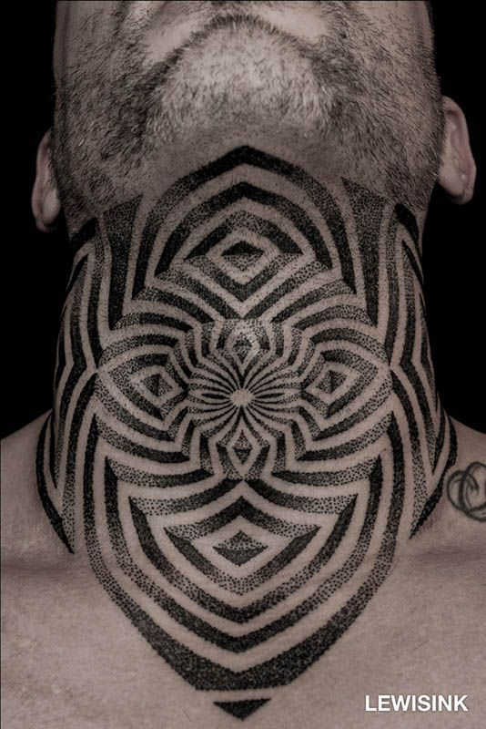

Fiebre Tatto


Tribal
Uno de los estilos de tatuaje basados en una estética más antigua y ancestral.
Casi siempre de color negro, a menudo utilizando simetría y diseño geométrico.
Graffiti
El estilo graffiti o new school es un estilo de tatuaje que utiliza dibujos animados, influenciados por las técnicas y estilos artísticos del graffiti y el hip-hop.
Diseños con colores brillantes y características exageradas. Un tipo de tatuaje con un toque juvenil y transgresor.


Dotwork
El estilo de tatuaje dotwork o punteado es uno de los más modernos,
emplea muchos puntos diminutos en áreas donde normalmente se puede usar sombra y se crean formas con estos puntos. Se basa en el impresionismo.
